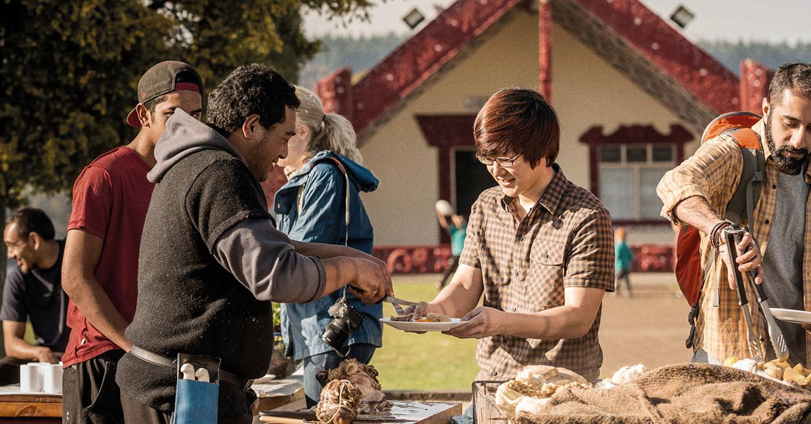

Manaakitanga means hospitality and generosity, is the act of showing kindness, respect, and support to others. this could be in many ways, whether it be simple, such as holding the door open for others, or more involved, like helping others with a hard job. manaakitanga is an important skill to have in your leter life, as being at least a slightly good person is an to be expected in most places.
MANAAKITANGA
